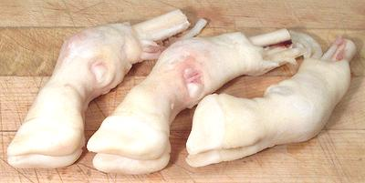

Lamb Feet

Lamb feet are used mainly to add substance to soups and stews. They appear
in recipes from regions where cows can't be economically raised and pigs
are forbidden (or way too expensive to raise). The photo specimens, from
New Zealand, were 6-1/2 inches long and weighed 4.9 ounces each.
More on Lamb / Mutton Cuts.
Buying:
These can be found in markets serving communities
from countries that use a lot of lamb: Turkey, Armenia, Middle East, North
Africa, Pakistan, and the like. Some stores do not place the feet on
display but you can ask for them at the counter.
Prep:
Feet sold here in California are completely cleaned,
all wool removed, parboiled and with the outer hoof removed. For best
results you want to split the lamb feet lengthwise to expose the tendons
and the bone marrow. To do this take set a foot on the cutting board, hoof
towards you. Carefully position your razor sharp Chinese cleaver knife at
the cleft and drive it through with your soft faced mallet. The bone
will split nicely.
Cooking:
.As with calf feet, the main reason to cook
lamb feet is to add body to soups and stews. They are interchangeable
with calve's feet on a same weight basis, but are not interchangeable
with pig feet which are quite different.
Split and put in the broth for the recipe. Simmer for about 1-1/2 hours.
The meat can be removed from the bones, cut up and returned to the
recipe. If the meat will not be used you can simmer considerably longer.
as_feetz 091015 - www.clovegarden.com
©Andrew Grygus - agryg@clovegarden.com - Photos
on this page not otherwise credited © cg1
- Linking to and non-commercial use of this page permitted